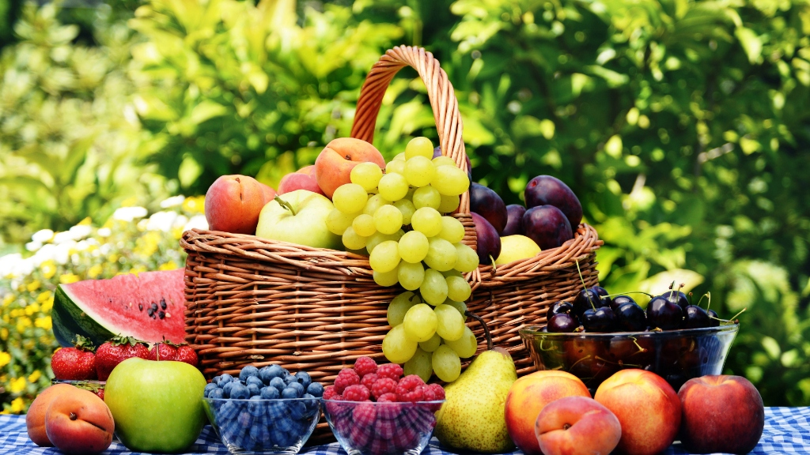
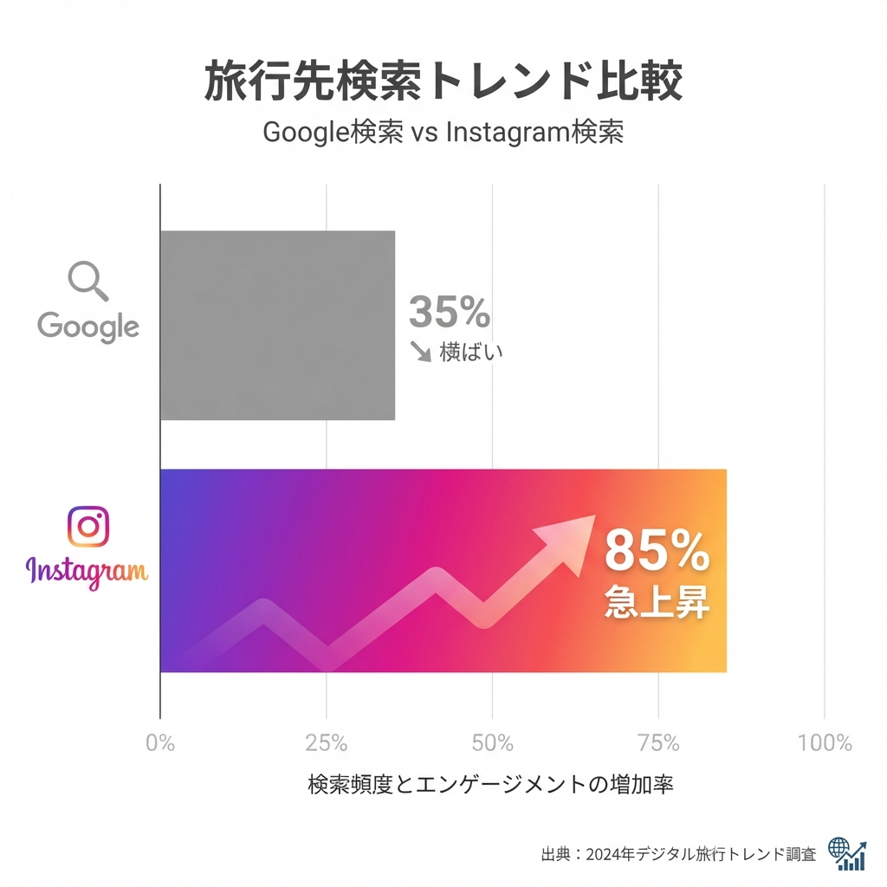
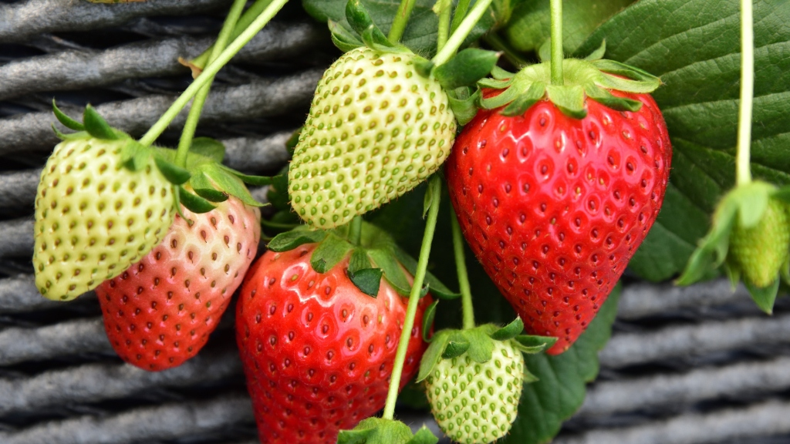
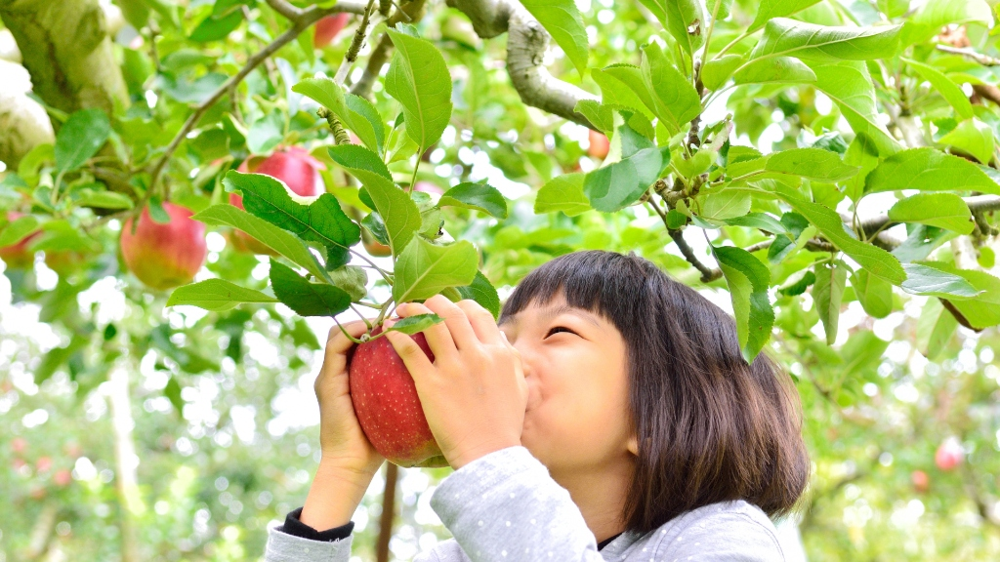
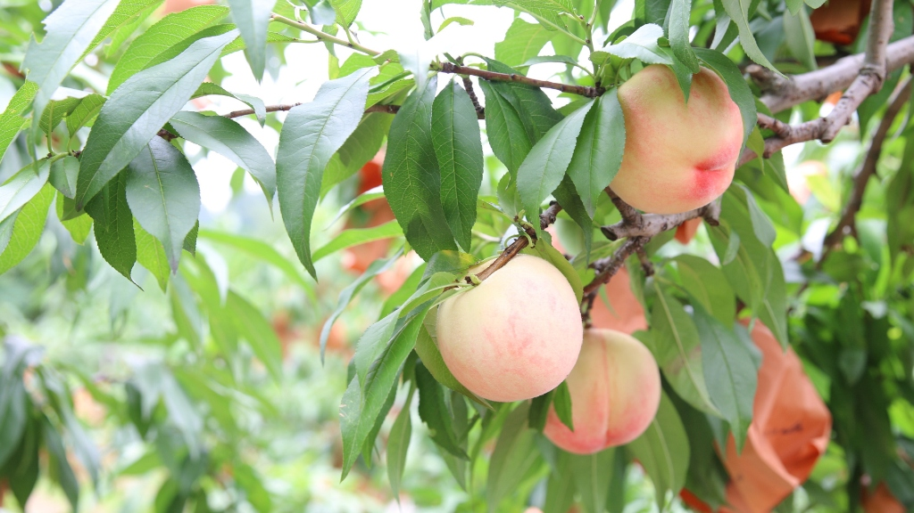
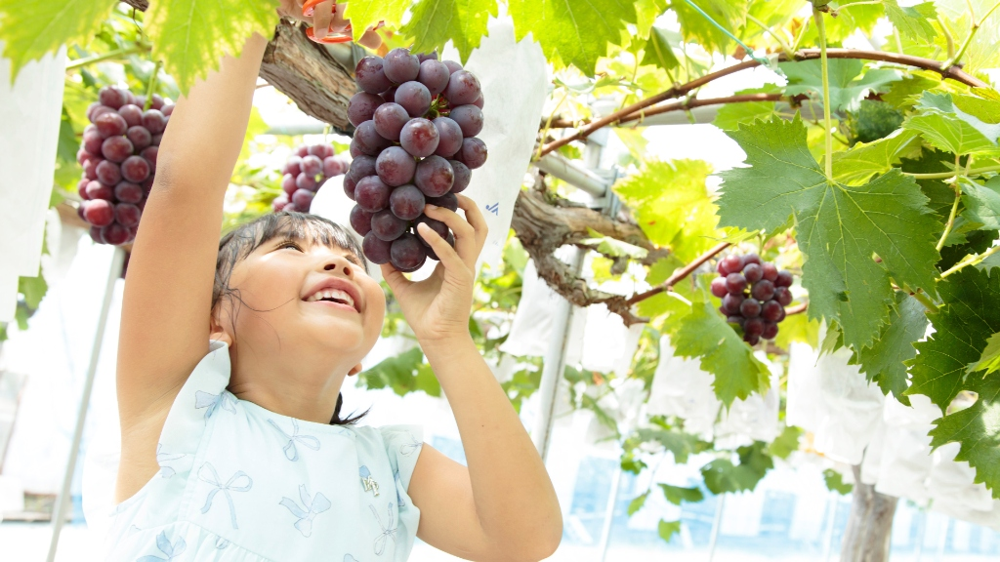

観光農園・農業に特化！
LINEで送るだけ
SNS運用代行
農園の「完熟の瞬間」を逃さず届けます！
月額6,000円から手軽に始められる、
果樹園・観光農園のための
Instagram運用サポート。

なぜ農園にInstagram運用が必要なのか？
①「美味しさ」と「お客様の声」が直接届くから
農園の価値は、味・鮮度・季節感・人の想い。Instagramなら、写真や動画で直感的に届けられるだけでなく、お客様からの「美味しかった！」というリアルな声や笑顔に直接触れることができます。
- 実際の畑の様子・収穫の瞬間
- 生産者の顔と熱い想い
- お客様のリアルな反応と交流
Instagramは、これらを直感的に届けられる最強のツールです。
② 広告費をかけずに「ファン」を増やせる
チラシや広告は「一度きり」。Instagramは、投稿が積み重なる資産になります。
投稿を見て → 共感して → フォローして → 毎年思い出してもらえる
“選ばれる農園”になるための土台が作れます。
③ 「買う前」に信頼してもらえる
今のお客様は、買う前にInstagramを見るのが当たり前。どんな人が、どんな想いで作っているかを確認しています。
- 本当に安心できる農園か
- どんな想いで育てているか
価格ではなく、あなたの“想い”で選ばれる農園になります。
④ 直売・観光・ECすべてにつながる
Instagramはゴールではなく、あらゆる販売チャネルへの「入口」です。
- 内容はお問い合わせ
- DM・コメント対応代行
- 広告運用サポート
- オンラインショップの購入
すべてを自然につなげる最強の集客導線になります。
Instagramは「やらなきゃいけない作業」ではない
正しく運用すれば、
🌱 農園の魅力を伝え
🌱 応援してくれるファンを増やし
🌱 売上につながる
農園の未来を育てるツールになります。
「ググる」から「タグる」時代へ
最近は観光地や訪問先を探すとき、
インターネット（検索エンジン）ではなくInstagramで探す方が急増しています。

※検索頻度と利用意向の推移イメージ
こんなお悩みありませんか？
フルーツ狩り予約が埋まらない
一番美味しい時期の告知が遅れてしまい、予約を逃している...
果物の魅力が伝わらない
宝石のように綺麗な果実なのに、写真でその魅力がうまく伝えられない...
新たな販路・売り先が見つからない
直売所や発送の売上が不安定。新しい取引先や、ファン層を広げるきっかけが掴めない...
選ばれる4つの理由
強み分析 ＆
「旬」を逃さない投稿提案
農園独自の強みをしっかり分析した上で、開園前の生育状況から「今が食べ頃！」の告知まで。フルーツのサイクルに合わせた最適な投稿をご提案し、予約の最大化を狙います。

月額6,000円〜！
農家応援価格
「まずは収穫期間だけ試したい」という方も歓迎。小規模農家様でも安心して続けられる価格設定です。

LINEで届けるだけ
現場の手間なし
作業の合間にスマホでパシャリ。LINEで送れば、ハッシュタグ選定から投稿までプロが完了させます。

農園に寄り添う
伴走型サポート
農業・観光ビジネスの動線を熟知したスタッフが、あなたの農園のパートナーとして一緒に歩みます。単なる作業代行ではなく、想いを形にするための「伴走」を大切にしています。

導入のメリット
農園のファン作り
栽培のこだわりや農園の風景を見せることで、固定客（ファン）が増えます。
繁忙期の負担軽減
最も忙しい時期のSNS投稿を外注することで、農作業に集中できます。
来客・予約増加
「今すぐ行きたい！」と思わせるタイムリーな発信で、予約数を伸ばします。
EC販売の促進
Instagramから直接ショップへ誘導し、ネット販売の売上アップに貢献します。
ブランド化
「あそこの農園はお洒落で美味しそう」という地域ブランドを確立します。
求人・援農の確保
活気ある様子を発信することで、お手伝いやスタッフ募集にも役立ちます。
導入事例
観光いちご農園 A様
来場者増 ＆ 嬉しい感想が続々！
Instagramを始めてから「インスタを見ました」というお客様が劇的に増加。さらに、来園後に『美味しかった！また行きます！』とリアルな感想が届くようになったのが何より嬉しかったです。

採れたて完熟桃農家 B様
個人購入＆カフェ取引が拡大！
個人の方の商品購入はもちろん、Instagramを見たカフェ等の飲食店からも「ぜひ仕入れたい」とお取引の依頼が舞い込むようになりました。

ぶどう果樹園 C様
広告運用で在庫を完売！
収穫量が多く在庫が過多になった際、ピンポイントでInstagram広告を配信。ターゲット層に正しく届けることで、無事に全ての在庫を売り切ることができました。
選べる3つのプラン
初期費用・アカウント制作費
・プロフィール設定 0円！
月1回の打ち合わせも
全てのプランに含まれています。
- 週1回投稿
- 月1回打ち合わせ
- 初期費用無料
- 週2回投稿
- 月1回打ち合わせ
- 初期費用無料
- 週3回投稿
- 月1回打ち合わせ
- 初期費用無料
- DM・コメント対応
※全プランに「アカウント開設」「プロフィール設定」が含まれます。
※収穫期間のみ（3ヶ月〜）のご契約も可能です。お気軽にご相談ください。
ご契約は3ヶ月から承ります。
よくあるご質問
収穫期間だけお願いすることはできますか？
はい、可能です！ご契約は3ヶ月から承っておりますので、シーズンの前から開始して期間終了まで、といった短期集中での運用もお任せください。
SNSやインターネットが苦手なのですが大丈夫ですか？
はい、もちろんです！写真や動画をLINEで送っていただくだけで、あとの難しい設定や投稿作業はすべてこちらで行います。操作に自信がない方も、どうぞ安心してお任せください。
どんな写真を撮ればいいかわかりません。
ご安心ください！何を撮ればいいかわからないという方にも、こちらから「こんな投稿をしましょう」という写真の撮り方やネタを具体的にご提案させていただきます。
ECサイトへの誘導もしてもらえますか？
はい！プロフィールのURL設定や、投稿から商品ページへの誘導など、販売に繋げるための動線設計もプランに含まれております。
ご利用の流れ
お問い合わせ
まずはフォームより農園の状況をご相談ください。
ヒアリング
収穫時期や目標に合わせたプランを決定します。
お見積り
内容にご納得いただけたらご契約となります。
サービス開始
LINEで写真を送って運用スタートです！
Instagram以外も
まるっとお任せ!
農園の魅力を伝えるためのあらゆるクリエイティブをサポートします。
公式LINE作成
HP作成・修正
販売サイト作成
チラシ作成
メニュー作成
POP作成
看板・のぼり旗
ユニフォーム制作
キャラクター制作
PR動画制作
会社概要
- 会社名
- ラヴィーナ株式会社
- 所在地
- 東京都杉並区梅里1-13-11
- 事業内容
- SNSマーケティング、農業支援、化粧品販売業
- 代表者
- 代表取締役 堀口カストゥリ
- メールアドレス
- info@raveena.jp